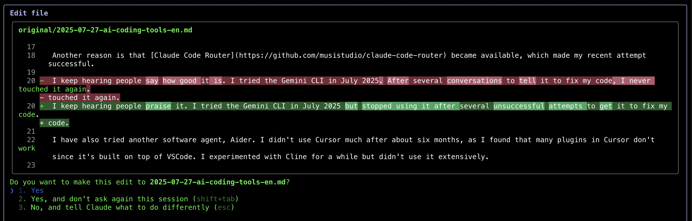

Coûts des LLM, agents et outils de codage | Original, traduit par l'IA
Table des matières
- Optimisation des coûts des API LLM
- Commencer par les modèles les plus économiques
- Éviter l’utilisation inutile de modèles haut de gamme
- Privilégier les bibliothèques NLP pour les tâches simples
- Créer des agents spécialisés pour plus d’efficacité
- Comparer les modèles via des tests approfondis
- Utilisation des API de Deepseek et Mistral
- Les coûts de DeepSeek augmentent avec les échecs de cache
- Les tokens de sortie dominent les dépenses de Mistral
- La tarification de Grok favorise largement les tokens d’entrée
- L’utilisation des tokens varie selon la complexité de la tâche
- La tarification correspond aux taux documentés
- Agents généraux vs agents spécialisés
- Les agents généraux peinent avec la complexité
- Les agents spécialisés excellent dans leur domaine
- Les outils de workflow limitent la flexibilité
- Les agents Python personnalisés offrent plus de contrôle
- Compromis entre commodité et puissance
- Le point de vue d’un ingénieur exigeant sur les outils de codage IA
- Privilégier l’utilité pratique plutôt que le battage médiatique
- VSCode + Copilot reste fiable
- Claude Code impressionne avec ses modifications de type diff
- Les outils de grammaire nécessitent une vérification manuelle
- L’expérimentation prime sur l’adoption aveugle
Optimisation des coûts des API LLM
2025.08
 Source : openrouter.ai
Source : openrouter.ai
 Source : openrouter.ai
Source : openrouter.ai
Lors de l’optimisation de l’utilisation des tokens, il est conseillé de commencer par des modèles plus économiques. Si des problèmes surviennent, envisagez de passer à des modèles plus avancés. Mistral, Gemini Flash et DeepSeek sont généralement économiques, tandis que Claude Sonnet est généralement plus cher. Il est crucial de comprendre comment Claude Code utilise les routeurs présentés ci-dessous.
Dans ma récente expérience, j’ai engendré des coûts importants en négligeant ce principe. J’essayais d’atteindre mon utilisation maximale pour déterminer le coût, ce qui n’est pas une approche rationnelle ; c’est un simple calcul. Par exemple, ai-je vraiment besoin de Sonnet 4 ? Pas nécessairement. Bien que je le perçoive comme un modèle plus avancé d’Anthropic et qu’il soit bien classé sur OpenRouter, je ne comprends pas bien les différences entre Sonnet 4 et Sonnet 3.5.
J’ai appris quelque chose de précieux lors d’une récente interview avec le fondateur de Replit, Amjad Masad. Pour de nombreuses tâches, des modèles très avancés ne sont pas nécessaires. Idéalement, si nous pouvons éviter d’utiliser l’API LLM, c’est parfait. Certaines bibliothèques NLP sont efficaces pour les tâches simples ; par exemple, HanLP excelle dans le traitement des tâches en chinois.
De plus, nous pouvons développer des agents personnalisés ou spécialisés pour gérer les tâches efficacement dès le départ. Claude Code n’est peut-être pas toujours la meilleure ou la solution la plus économique pour chaque tâche.
Une façon de discerner les différences entre les modèles est de les utiliser abondamment et de comparer leurs performances. Après avoir utilisé Gemini 2.5 Flash pendant un certain temps, je le trouve moins performant que Sonnet 4.
Après quelques jours, j’utilise la configuration ci-dessous pour m’aider. Le paramètre longContextThreshold est très important. Vous pouvez périodiquement vider la console de Claude Code ou la redémarrer. Il est très facile d’atteindre le seuil de contexte long lors de l’utilisation de Claude Code pour écrire du code.
{
"PROXY_URL": "http://127.0.0.1:7890",
"LOG": true,
"Providers": [
{
"name": "openrouter",
"api_base_url": "https://openrouter.ai/api/v1/chat/completions",
"api_key": "",
"models": [
"moonshotai/kimi-k2",
"anthropic/claude-sonnet-4",
"anthropic/claude-3.5-sonnet",
"anthropic/claude-3.7-sonnet:thinking",
"anthropic/claude-opus-4",
"google/gemini-2.5-flash",
"google/gemini-2.5-pro",
"deepseek/deepseek-chat-v3-0324",
"deepseek/deepseek-chat-v3.1",
"deepseek/deepseek-r1",
"mistralai/mistral-medium-3.1",
"qwen/qwen3-coder",
"openai/gpt-oss-120b",
"openai/gpt-5",
"openai/gpt-5-mini",
"x-ai/grok-3-mini"
],
"transformer": {
"use": [
"openrouter"
]
}
}
],
"Router": {
"default": "openrouter,openai/gpt-5-mini",
"background": "openrouter,google/gemini-2.5-flash",
"think": "openrouter,qwen/qwen3-coder",
"longContext": "openrouter,deepseek/deepseek-chat-v3.1",
"longContextThreshold": 2000,
"webSearch": "openrouter,mistralai/mistral-medium-3.1"
}
}
Agents généraux vs agents spécialisés
2025.08
Manus est présenté comme un outil d’agent IA général, mais il ne fonctionnera probablement pas très bien.
Une raison est qu’il est très lent, effectuant beaucoup de travail inutile et étant inefficace. Une autre raison est que s’il rencontre un problème complexe ou tombe sur un point faible, vous échouerez probablement dans votre tâche.
Les agents spécialisés fonctionnent bien car ils sont hautement spécialisés. Ils sont adaptés à des tâches très spécifiques. Il existe des dizaines de bases de données et plus d’une centaine de frameworks de développement web comme Spring. Il existe également de nombreux frameworks web, tels que Vue ou React.
Dify se concentre sur l’utilisation de l’IA pour connecter des workflows, utilisant une méthode de glisser-déposer pour définir des workflows IA. Ils doivent faire beaucoup pour connecter les informations, les données et les plateformes.
J’ai également construit quelques agents simples, comme un agent de refactorisation de code Python, un agent de correction grammaticale, un agent de correction de bugs et un agent de fusion d’essais.
Le code est très flexible. Ainsi, Dify ne couvre qu’une petite partie de l’espace des idées possibles.
Manus effectue des tâches et montre aux utilisateurs comment il fonctionne en utilisant une méthode VNC pour afficher un ordinateur.
Je pense que l’avenir se jouera entre ces deux approches.
Pour Manus, vous devez télécharger du code ou du texte pour effectuer des tâches, ce qui n’est pas pratique. Avec Dify, vous devez construire des workflows en utilisant le glisser-déposer, similaire à MIT Scratch.
Pourquoi Scratch n’est-il pas aussi populaire que Python ? Parce qu’avec Python, vous pouvez faire tellement de choses, alors que Scratch est limité à des programmes simples à des fins éducatives.
Dify a probablement des limites similaires.
Manus peut gérer beaucoup de tâches simples. Cependant, pour certaines tâches, en particulier celles qui touchent les points faibles de Manus, il échouera.
De plus, de nombreux programmes ou services prennent du temps à configurer. Dans l’approche de Manus, ce processus est lent.
En tant que programmeur, j’utilise l’IA avec Python pour construire mes agents spécialisés. C’est l’approche la plus simple pour moi. Je peux également configurer des invites et des contextes pour garantir une sortie relativement stable des API LLM.
Manus et Dify sont également construits avec ces API LLM. Leur avantage est qu’ils ont déjà beaucoup d’outils ou de code prêts à l’emploi.
Si je veux construire un agent Twitter bot, utiliser Dify peut être plus pratique que d’en construire un moi-même avec des technologies open source.
Le point de vue d’un ingénieur exigeant sur les outils de codage IA
2025.08
Récemment, j’ai réussi à faire fonctionner Claude Code, alors je veux partager mon parcours de sélection d’outils. J’ai également collecté quelques conseils sur les outils IA en chemin.
J’ai adopté Claude Code assez tard.
Claude Code est sorti vers fin février 2025.
Je n’ai réussi à l’essayer que récemment. Une raison est qu’il nécessite l’API Anthropic, qui ne prend pas en charge les cartes Visa chinoises.
Une autre raison est que Claude Code Router est devenu disponible, ce qui a rendu ma tentative récente réussie.
J’entends constamment des éloges à son sujet. J’ai essayé le CLI Gemini en juillet 2025 mais l’ai abandonné après plusieurs tentatives infructueuses pour le faire corriger mon code.
J’ai également essayé Aider, un autre agent logiciel. J’ai arrêté d’utiliser Cursor après environ six mois car beaucoup de ses plugins basés sur VSCode dysfonctionnaient. De plus, je ne veux pas trop créditer Cursor puisqu’il est construit sur VSCode. Comme le plugin Copilot dans VSCode s’est amélioré récemment et ne traîne pas trop derrière, je préfère l’utiliser plus souvent.
Cependant, VSCode est construit sur Electron, une technologie open source. Il est difficile d’attribuer le mérite à la bonne équipe ou individu. Considérant que de nombreuses grandes entreprises et startups profitent des projets open source, je dois me concentrer sur mon budget et ce qui me convient le mieux. Je ne devrais pas trop m’inquiéter de donner du crédit. Je préfère utiliser des outils abordables et efficaces.
J’ai brièvement expérimenté Cline mais ne l’ai pas adopté.
J’utilise le plugin Copilot dans VSCode avec un modèle personnalisé, Grok 3 beta via OpenRouter, ce qui fonctionne bien.
Je ne pense pas que Claude Code changera mes habitudes, mais comme je peux le faire fonctionner et que j’ai la patience de l’essayer quelques fois de plus, je verrai comment je me sens dans les semaines à venir.
Je suis un utilisateur exigeant avec 10 ans d’expérience en génie logiciel. J’espère que les outils peuvent être excellents dans une utilisation réelle. Je ne crois pas à la marque — je me soucie seulement de l’utilité quotidienne.
Après avoir utilisé Claude Code pour corriger la grammaire de cet article, j’ai constaté qu’il fonctionne bien dans certains scénarios. Bien que j’apprécie l’IA pour l’aide grammaticale (j’ai même écrit un script Python pour appeler les API LLM à cet effet), j’ai remarqué un schéma frustrant — même lorsque je demande des corrections minimales, les outils continuent de présenter de nombreuses suggestions grammaticales à examiner. Ce processus de vérification manuelle va à l’encontre de l’automatisation. En compromis, je laisse maintenant l’IA traiter des essais entiers, bien que cette approche limite mes opportunités d’apprentissage puisque je ne vois pas les corrections spécifiques effectuées.
Ce qui m’a le plus impressionné, c’est la façon dont Claude Code affiche les modifications — montrant des comparaisons avant-après similaires aux diff de git, ce qui facilite grandement la révision des modifications.
Après une journée, j’ai utilisé Claude pour corriger du code également. Cependant, je continue d’utiliser le plugin Copilot avec le modèle Grok 3 beta, car il est simple et facile pour moi.
Après avoir utilisé Claude Code pendant plusieurs jours, je dois dire qu’il est très impressionnant. J’aime vraiment la façon dont il corrige mon code.
 Source : Capture d’écran personnelle
Source : Capture d’écran personnelle
 Source : Capture d’écran personnelle
 Source : Capture d’écran personnelle
Source : Capture d’écran personnelle
Utilisation des API de Deepseek et Mistral
2025.01.25
DeepSeek
En un mois, 15 millions de tokens m’ont coûté environ 23,5 CNY.
Voici mon utilisation en une journée :
| Type | Tokens |
|---|---|
| Entrée (Cache Hit) | 946,816 |
| Entrée (Cache Miss) | 2,753,752 |
| Sortie | 3,100,977 |
Le calcul est le suivant :
0.94 * 0.1 + 2.75 * 1 + 3.10 * 2 = 11.83
Donc, selon la tâche, l’utilisation des tokens dépend largement de l’entrée (cache miss) et de la sortie.
Ce résultat correspond au coût attendu.
Tarification de l’API DeepSeek
 Source : Capture d’écran personnelle
Source : Capture d’écran personnelle
Mistral
La tarification des modèles Mistral est la suivante :
| Model | Entrée (USD par million de tokens) | Sortie (USD par million de tokens) |
|---|---|---|
mistral-large-2411 |
2 | 6 |
mistral-small-latest |
0.2 | 0.6 |
En une journée, l’utilisation de mon compte Mistral était la suivante (Modèle : mistral-large-2411) :
| Type | Tokens | Coût (USD) |
|---|---|---|
| Total | 772,284 | 3.44 |
| Sortie | 474,855 | 2.85 |
| Entrée | 297,429 | 0.59 |
Pour le modèle mistral-small-2409, l’utilisation totale était de 1 022 407 tokens.
En supposant qu’un tiers étaient des tokens d’entrée et deux tiers des tokens de sortie :
Il y avait 340 802 tokens d’entrée et 681 605 tokens de sortie.
Par conséquent, le coût total est calculé comme 340 802 * 0.2 / 1 000 000 + 681 605 * 0.6 / 1 000 000 = 0.07 + 0.41 = 0.48 USD.
La console Mistral indique un coût total d’utilisation de 0.43 USD, ce qui correspond approximativement à notre calcul.
Grok
| Model | Entrée (USD par million de tokens) | Sortie (USD par million de tokens) |
|---|---|---|
grok-2-latest |
2 | 10 |